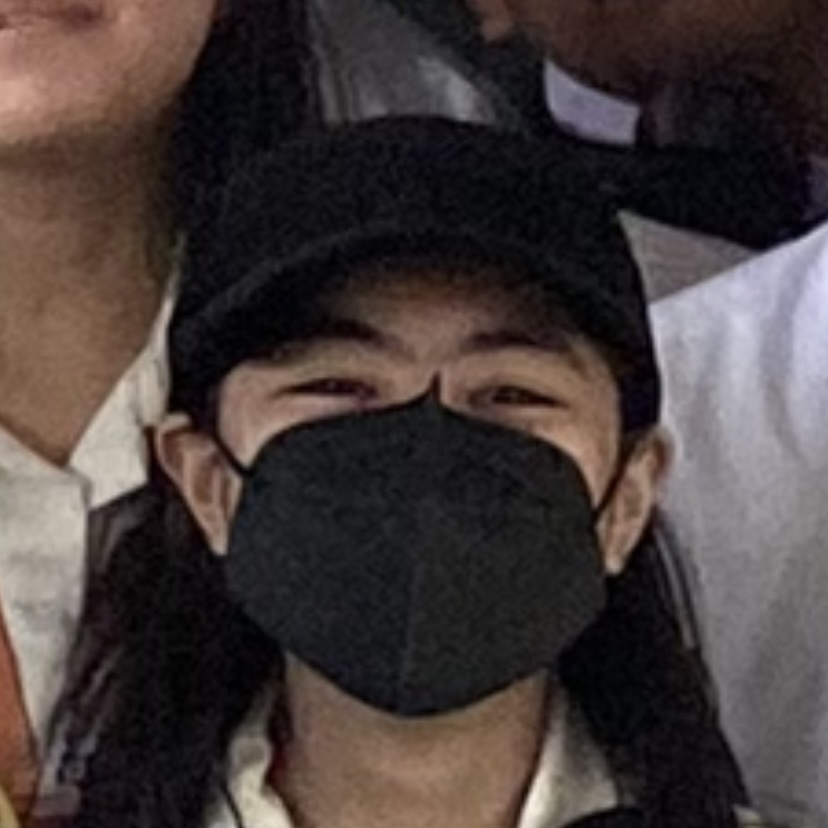
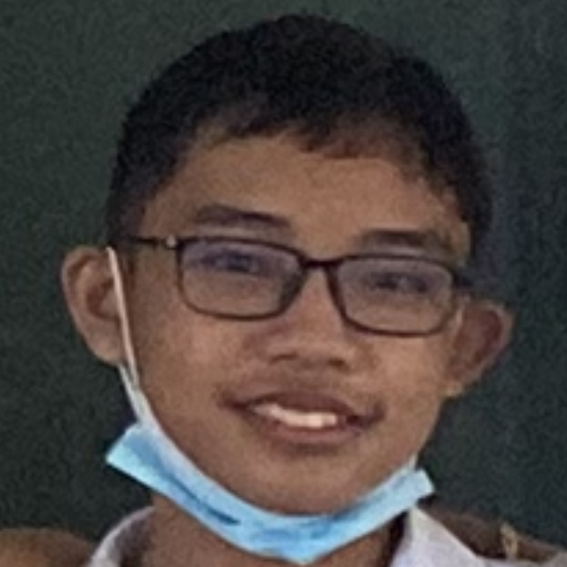
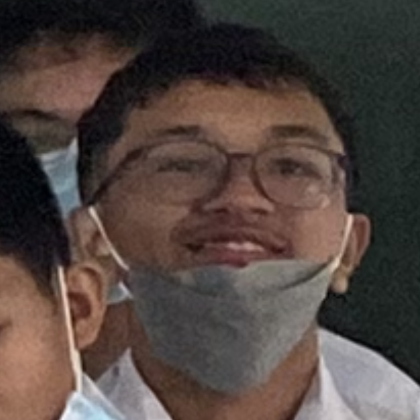

Sophia Angela D. Blaya
The main researcher and overseer for the project. She created majority of the statistics project using Sam and Kyle's research. Together, they made a full-fledged presentation for statistics on trading.

Kyle J. Bandico
Researcher and assistant for the project. He along with Sam made research on the statistics with Angela and also contributed to the final paper and presentation of the project.

Sam Jacob D. Daquioag
Researcher and overseer for project quality assurance. Alongside working with Kyle to create research, he was responsible for fact checking any information before it gets included in the final project.